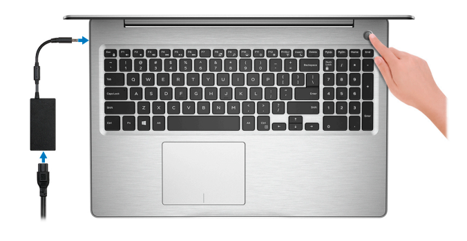

Configuración
1- Conecte el adaptador de alimentación y presione el botón de encendido.
 2- Finalice la configuración del sistema operativo.
Para Ubuntu:
Siga las instrucciones que aparecen en pantalla para completar la configuración.
Para Windows:
Siga las instrucciones que aparecen en pantalla para completar la configuración.
Durante la configuración, Dell recomienda lo siguiente:
— Conectarse a una red para las actualizaciones de Windows.
— Si está conectado a Internet, inicie sesión con su cuenta de Microsoft o cree
una nueva. Si no está conectado a Internet, cree una cuenta sin conexión.
— En la pantalla Soporte y protección, introduzca su información de contacto.
3- Localice y use las aplicaciones de Dell en el menú Inicio de Windows (recomendado) Para información más detallada visitar aquí
Vistas
Izquierda

1- Puerto de alimentación
2- Indicador luminoso del estado de la bateria
3- Puerto USB tipo C
4- Puerto HDMI
5- Puerto de red
6- Puertos USB
7- Puerto para auriculares
Derecha

1- Ranura para tarjetas SD
2- Puerto USB
3- Unidad óptica
4- Ranura para cable de seguridad
Pantalla

1- Micrófono izquierdo
2- Cámara
3- Indicador luminoso de estado de la cámara
4- Micrófono derecho
Base

1- Área de clic izquierdo
2- Superfie táctil
3- Área de clic derecho
4- Botón de encendido